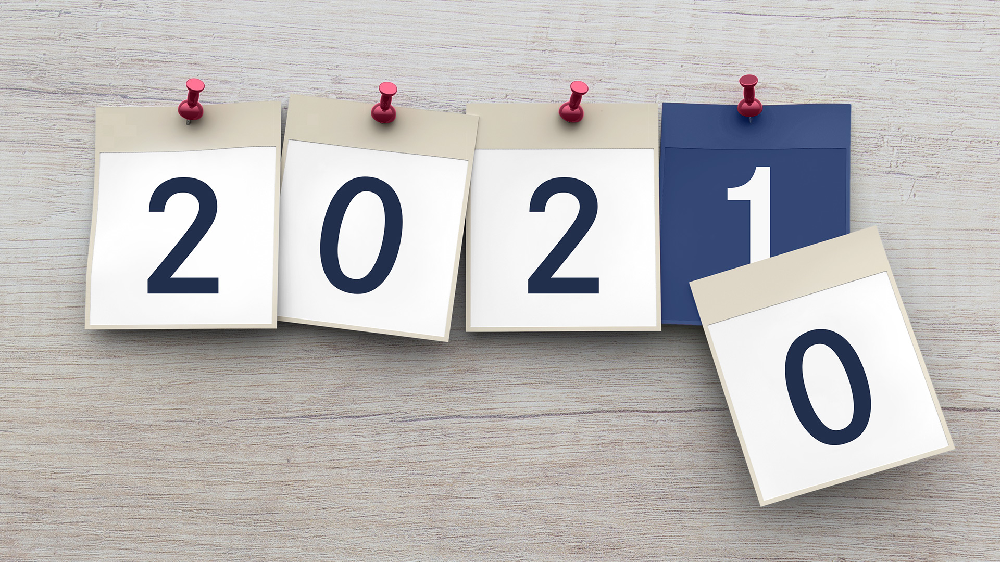

Mehr erfahren
Marktturbulenzen lassen sich nicht vermeiden.

Aktuelle Hinweise und Kontaktmöglichkeiten zu allen Themen rund um den Jahresabschluss 2020 haben wir für Sie zusammengestellt.

Zahnarzt Gehalt 2020
Was verdient ein angestellter Zahnarzt heute? Die Gehälter variieren stark - das zeigt eine aktuelle Umfrage der apoBank. Infos zu Einkommen, Arbeitszeit und Arbeitsumfeld finden Sie hier.

Ausblick: Vermögensaufbau 2021
Die Corona-Pandemie war das beherrschende Thema in 2020. Was bedeutet das für Sie als Anleger? Nehmen Sie an unserem interaktiven Expertengespräch teil.

Gute Gründe aufzuatmen
Die Corona-Pandemie bereitet Deutschland gerade einen harten Winter. Dennoch gibt es gute Gründe aufzuatmen. Im Rückblick hat die Pandemie hierzulande weniger stark gewütet als erwartet.